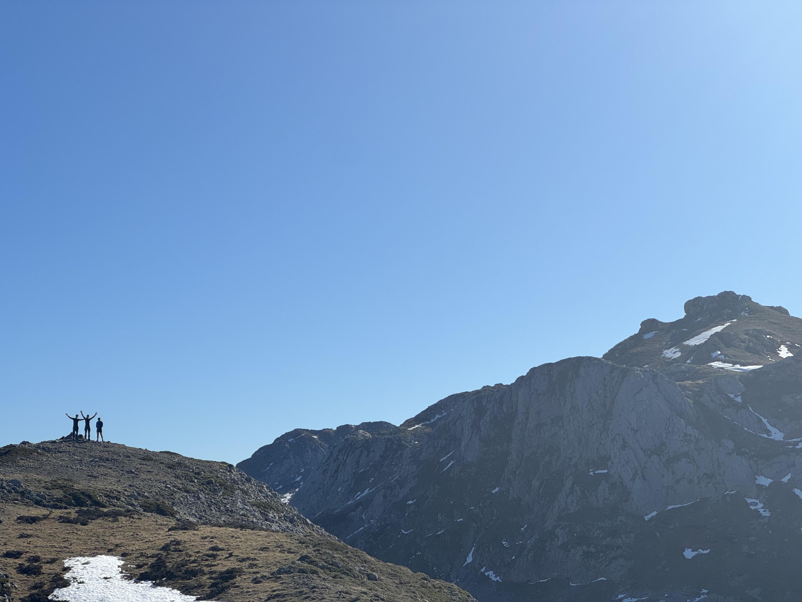
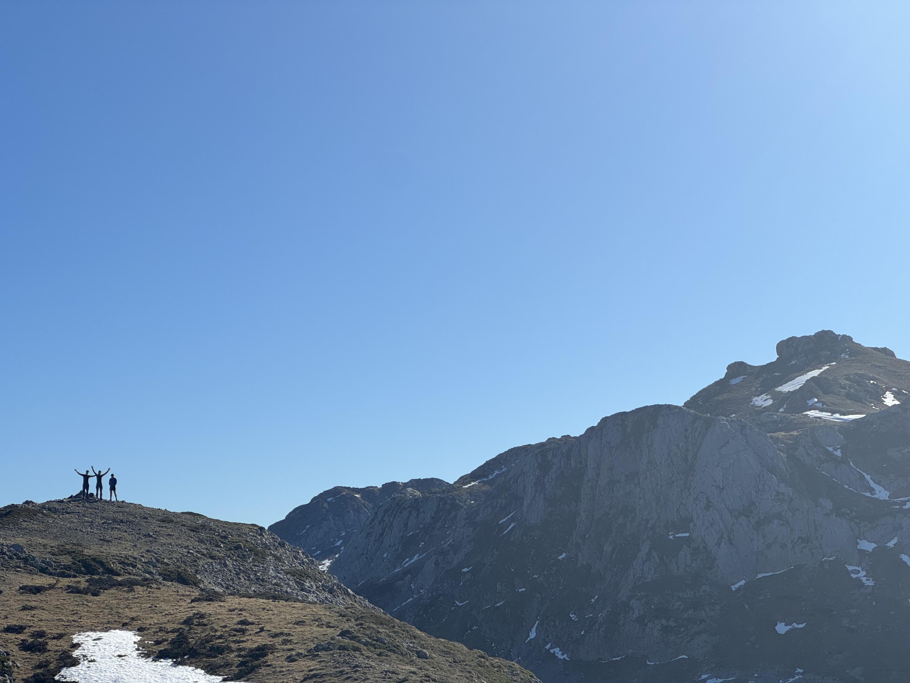
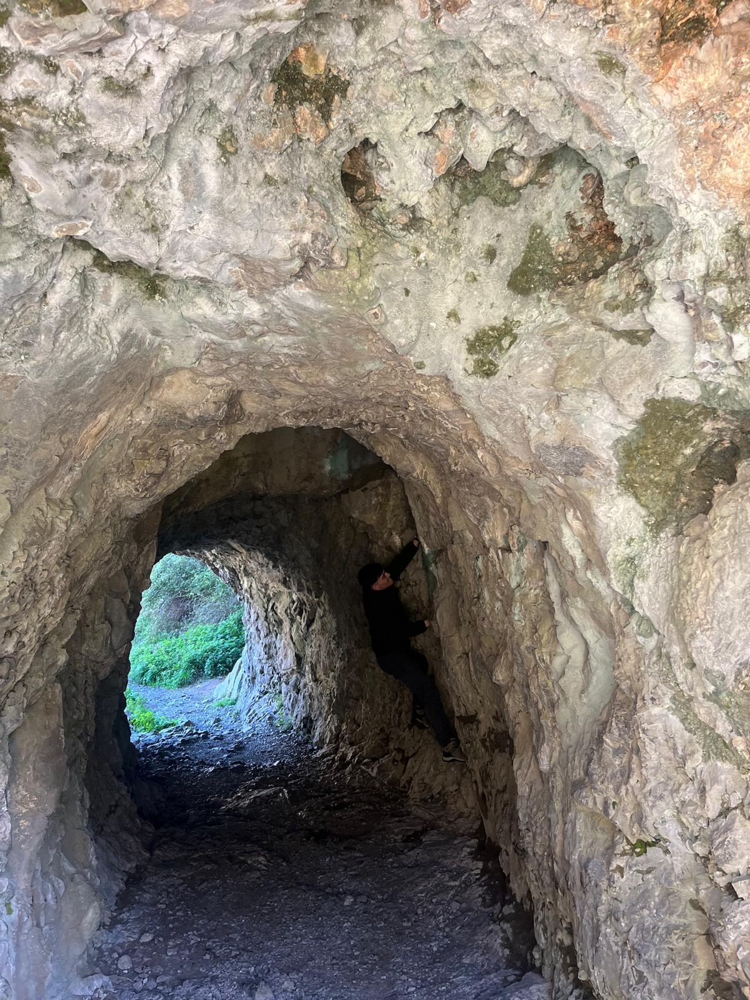
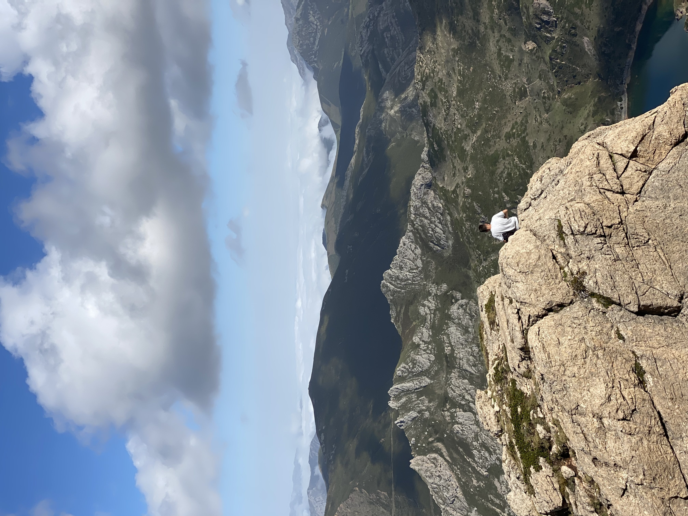
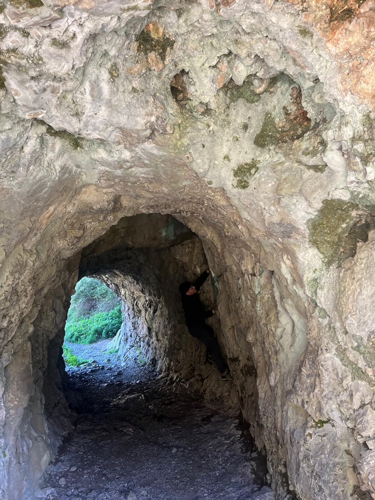
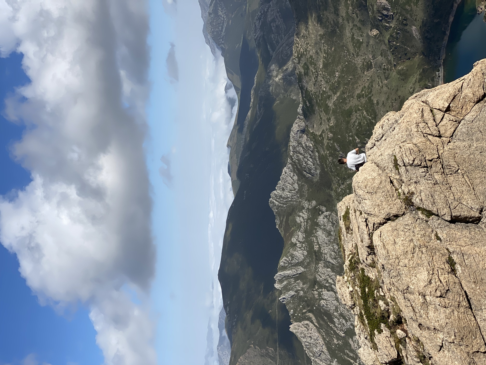

Sobre Mí
Un poco más sobre mi trayectoria y mis intereses.
Mi Pasión por la Informática
Mi entusiasmo por la informática no es reciente; comenzó cuando tenía 14 años. Lo que empezó como una simple curiosidad se convirtió rápidamente en una pasión.
Recuerdo que en clase de Historia, en lugar de hacer la típica presentación de diapositivas, decidí ir un paso más allá y programé un pequeño juego interactivo. Era un "pequeño rpg" ambientado en el descubrimiento de América, donde tus decisiones afectaban el destino del Imperio. Aunque gráficamente era muy simple, me fascinó cómo podía crear mundos y lógicas funcionales desde cero.
Esa chispa inicial me llevó a explorar más y más. Hoy, esa pasión se ha diversificado y he desarrollado un profundo interés por el dessarollo backend y la ciberseguridad. Entender cómo proteger y desarrollar los sistemas y los datos en un mundo tan conectado me parece uno de los desafíos más cruciales y estimulantes de nuestra era.
Mis Aficiones
Fuera del mundo digital, encuentro mi equilibrio en la naturaleza. Soy un gran entusiasta de la escalada y el senderismo. Me encanta la sensación de desconectar, enfrentar un reto físico y disfrutar de vistas increíbles.
Aquí comparto algunos de esos momentos:

 

 


